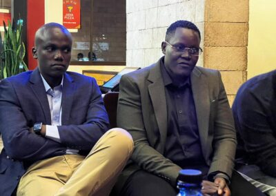
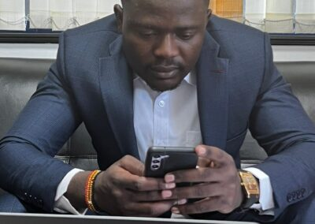

Uniting for Change: Empowering Intersex Persons in Kenya through Collaborative Action.

Key stakeholders come together to uplift the lives of intersex individuals
Introduction
In a groundbreaking meeting held on 23rd March 2023, five organizations joined forces to create a robust support system for intersex persons in Kenya. The Rotary Club of Ngong Rd, Variable Care Society, Broshere Community, Kenya National Commission on Human Rights (KNCHR), and the Intersex Persons Implementation Coordination Committee (IPICC) came together to discuss various ways to uplift the lives of intersex individuals through counseling, education, and awareness.
I. Rotary Club of Ngong Rd: Pledging Support for Intersex Persons
The Rotary Club of Ngong, known for its dedication to service, pledged to provide support to intersex persons in the areas of counseling, education, and awareness. They reiterated their commitment to working with other stakeholders to ensure that intersex individuals receive the necessary assistance to lead fulfilling lives.
II. Variable Care Society: Advocating for Acceptance and Rights
Fiddie Torvil Omolo, the Executive Director of Variable Care Society and an intersex person herself, shared her inspiring story at the meeting. She emphasized the importance of self-acceptance before seeking approval from others, especially for intersex individuals who often face discrimination, surgeries, and education challenges. The Variable Care Society, which focuses on protecting the rights of individuals, is a crucial partner in this endeavor. 
III. Broshere Community: Empowering Intersex Persons through IT Skills
Peter Simboni, the Organizing Secretary of Broshere Community, presented their unique approach to empowering intersex individuals through IT-related skills development. Broshere Community, a group of youths vested in IT-related activities, aims to enable financial independence for young people by teaching them both soft and hard IT skills. Partnering with KNCHR, the community is dedicated to educating intersex persons in IT-related courses. Through the organizing secretary, Broshere Community vowed to create awareness, empower intersex individuals by providing opportunities, and offer them space to navigate the social fabric.
IV. KNCHR/IPICC - Protecting and promoting Human Rights for All - Championing for Equality and Rights for Intersex Persons
The Kenya National Commission on Human Rights was represented by Commissioner Dr. Dennis Wamalwa, who appreciated the presence of all attendees and urged them to support the mission of uplifting intersex persons in Kenya and beyond. He highlighted the strides Kenya has made in protecting, empowering, and enhancing the lives of intersex individuals through reforms, education, and granting equal rights to all Kenyans.
V. Rotary Club of Ngong RD: A United Stand for Intersex Support
The meeting concluded with the Rotary Club of Ngong expressing gratitude to all attendees, and reaffirming their commitment to standing with the Commissioner, Variable Care Society, and other interested parties working towards helping intersex individuals.
Conclusion
This landmark meeting between the Rotary Club of Ngong Rd, Variable Care Society, Broshere Community, KNCHR, and the IPICC demonstrates the power of collaboration and unity in addressing the challenges faced by intersex persons in Kenya. Each organization brings its unique strengths and resources to the table, working together to create a strong, supportive network for intersex individuals.
The focus on counseling, education, awareness, IT skills development, and equal rights will undoubtedly have a profound impact on the lives of intersex persons. By providing them with the necessary tools, opportunities, and support, these organizations are laying the groundwork for a brighter future where intersex individuals can thrive and contribute to society without facing discrimination or prejudice.
As this movement gains momentum, it serves as a shining example of what can be achieved when different sectors come together to uplift the lives of those who need it the most. The spirit of unity displayed at this meeting offers a beacon of hope and inspiration, not only to intersex persons in Kenya but also to marginalized communities worldwide.
The journey has just begun, but with such strong commitment from these key stakeholders, the future looks promising for intersex persons in Kenya and beyond.
Regards
Commissioner, Dr. Dennis Wamalwa
Kenya National Commission on Human Rights